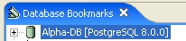
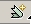

public) is shown. You can expand the a table or view
to see the columns. The little key sign left of the column icon After creating the bookmark, it appears in the bookmark view.
Then you'll probably want to open it. Double-click on the bookmark and it'll try to connect. If everything is all right, the sign will change to

(In this case, I have in my bookmark view, selected the Show Database
Info toggle switch in the toolbar menu. That
shows the info between square brackets. )
Note: You can have as many bookmarks as you want opened at the same time.
You can then expand the tree, clicking on the "+" sign. You'll be able to get something like
The most inmediate part is the tables and views structure, that shows the defined
tables, views, and so on for the schemas that we wanted. In the image, only
one schema (public) is shown. You can expand the a table or view
to see the columns. The little key sign left of the column icon  means that the column is a primary key column for that table. Double-clicking
on a table or view opens that table or view in the Table
View.
means that the column is a primary key column for that table. Double-clicking
on a table or view opens that table or view in the Table
View.
From release 3.0.4, the tables and views have a couple of new tags that give info about the relationships between them. This tags are the Uses/Used by couple.

Basically these two tags give info about what tables-views a view selects from and, more importantly, which views select from my table-view. That way, if you make a change to a table, you can know which views it's affecting. Opening the Views node in the "Used by" will scan all views in the schema, so it'll be a long operation, be warned. The functionality is very beta, and you cannot trust the results, even if they are tweaked into giving more false positives than negatives. The user interface is also subject to change, suggestions are welcome.
The Quick List is simply a quick reference for your most used tables and views.
If you use frequently a table, you don't want to have to look it up, amongst
perhaps tens of others, every time that you need it. To add a table or view
to the Quick List, just right-click on the table or view, and select Add
to Quick List from the Context Menu.
The Recent SQL Statements folders saves the last SQL statements
that you have issued in the SQL Query
Editor view. You can double-click on a query, and that cleans the
SQL Editor, and inserts your selected query in it. Also, the bookmark that you
used gets selected as the current bookmark to execute against, so the next time
you execute anything in the SQL Editor, that bookmark will be used.
Note that only the queries you yourself execute in the SQL Editor will be stored
as Recent SQL Statements, not implicit queries that Quantum may make to get
data from tables or structure data. If you want to know all the queries that
get sent to your database, you can activate the
SQL Log View. After activating (opening) the SQL Log View, all messages
sent to the database will be logged there for you to check. Also errors from
the database will be logged. To open the View, proceed like to open any Eclipse
view, that is go to Window > Show View > Others... > QuantumDB >
Quantum SQL Log.
If you right-click on the different items, you'll get a context menu with different options depending on the type of item you selected. Right-clicking on a table, for example, gives the following context menu:
The New Bookmark is already known, allows you to create another bookmark.
Copy allows to copy the structure of the table, in XML format, to the clipboard. An example of the format :
<?xml version="1.0" ?>
<metadata>
<table database="Postgres" isSynonym="false" name="films" schema="public">
<column java.sql.Types="1" name="code" nullable="false" position="1" primaryKey="true" size="5" type="bpchar" />
<column java.sql.Types="12" name="title" nullable="false" position="2" primaryKey="false" size="40" type="varchar" />
<column java.sql.Types="2" name="did" nullable="false" position="3" primaryKey="false" size="3" type="numeric" />
<column java.sql.Types="91" name="date_prod" nullable="true" position="4" primaryKey="false" size="4" type="date" />
<column java.sql.Types="1" name="kind" nullable="true" position="5" primaryKey="false" size="10" type="bpchar" />
<column java.sql.Types="1111" name="len" nullable="true" position="6" primaryKey="false" size="12" type="interval" />
</table>
</metadata>
The format is still in flow, as new items are added to it. No formal description of it is to be had, till some semblance of stability is adquired. So if you plan to invest time in some program that uses this format as input, please check first the status of the format with the developers.
Export and Import are the standard eclipse functions. Quantum extends Eclipse with a couple of export possibilities. To learn more about it, see Export and Import.
View Table is the default action, taken also when you double-click on the table. It opens the table on the Table View.
View Table Details will open in the Table View a fake table (fake in the sense that it's not a proper table of any database) with the metadata of the table you have selected. This metadata is got from the database in a different way as the others, so the infos it can display are also different.
Add to Quick List adds the table to the quick list of its bookmark. In the menu image is not active because the selected table is already in the Quick List. For the same reason is Remove from Quick List active. That option removes the table from the Quick List. This action of course affects not the underlying database table.
The SQL Statements is a submenu for options that generate and execute an SQL Statement refering to the selected table. It has two options to date:
Drop Table/View/Sequence that allows you to generate a simple DROP statement with the selected item (table, view or sequence). This of course would delete the underlying table, view or sequence from the database, so use with care. Even if the Auto-Commit option is not active, some databases make the changes to data dictionary to be always auto commited, so test your setup before using that command.
Delete All Rows does just that, generating a DELETE statement that will delete all table rows.
The Structure submenu groups all actions having to do with the metadata of the selected table(s) or view(s).
Copy will make a full structure copy of the selected items. The resulting XML may differ, usually being more extensive than the normal Copy action of the table.
Write to file... saves the full structure XML to a file that the user selects.
DDL from clipboard is a VERY experimental feature that tries to create a DDL statement that would create a table, view or sequence similar in structure to the ones selected. The structure data is taken from the clipboard. Note that even if this option appears when you select a table, you must be on a Bookmark or Schema to generate DDL for a table. The development of this feature is in very early stages, basically working only partially for ORACLE at the moment, but we make it available in case somebody has a use for it. The generated DDL will be pasted into the Query View, deleting whatever is there.
Search opens up the Eclipse Search dialog with the Database search page. You can search for text, regular expressions, numbers and dates. More info in this link.
Refresh applies to the whole opened tables or views folder, not only to the selected table or view. It refreshes the list of tables/views to reflect changes in the database. For example, if you drop a table using the previous command, the change will not be reflected into the bookmarks tree structrure till you refresh it.
Properties opens up a Properties dialog where you can check and sometimes change different data from the bookmarks, tables, views, etc. More info in this link.
In the toolbar there are a couple of buttons and a toolbar menu. The first button is a Create New Bookmark button  and works same as selecting the New Bookmark context menu item.
The second button allows you to collapse all your opened trees in the bookmark view, to reduce clutter.
If you open the toolbar menu in the sign on the toolbar, the following menu will pop up.
The Show Tabe Sizes menu selection will show the table size, in number or records, at every table name you have in the bookmark view. That can be pretty expensive in terms of time and resources, as a query needs to be done for every table in view.
The Show Database Info will show the type of the database and version at every open bookmark in the bookmark view.
Export Bookmarks creates an export file with info about the bookmarks you select. That allows you to re-create some previous bookmark structure after making changes to it, or copying the same bookmarks between machines.In the latter case, please note that the bookmarks have the driver path info, so that path might have to be changed if the driver is not at the same place in the different machines.
Import Bookmarks allows to import one such file. The import won't change or substitute any existing bookmark, so delete all bookmarks previously if you want a full substitution.
As from 3.0.4, you can use working sets to filter the bookmarks. For the moment, just the bookmark list, not the database objects inside. To do that, just open your working set manager dialog using the toolbar button, and then selecting a new working set in the dialog that will appear. Then you should get something like:
With the Quantum Database Bookmarks type on it. If it doesn't appear, something isn't working, or you have Quantum release previous to 3.0.4. You select the Quantum Database Bookmarks type and then you can select which bookmarks to show when the working set is selected. You can define several working sets and select one or more at each time. If you have none selected, or the selected ones have no bookmark selected inside, all bookmarks will be shown. This allow you to filter your bookmarks depending on your work context. If you are used to working sets, know that the Bookmark View will use only the Window Working Set, and cannot select a different one.